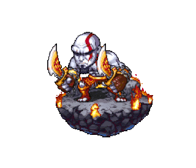

Atualmente cursando Engenharia de Computação na Universidade de Brasília, após cursar 6 anos uma graduação em Química Tecnológica na mesma instituição, onde também acumulei 7 meses de experiência prática através de estágios. Estou focado em minha constante evolução profissional, investindo tempo em cursos de programação e obtendo certificados em diversas áreas. Como entusiasta da tecnologia, mantenho um interesse voraz em aprendizado contínuo. Além disso, minha paixão por animes e jogos, tanto de tabuleiro quanto eletrônicos, proporciona uma forma de diversão e relaxamento, com preferência por abordagens casuais nos jogos.
• Meu jogo favorito é God of War;
• Meu filme favorito é Wall-E;
• Quanto a música sou bastante eclético e minha banda favorita é Megadeth;
• Tenho dois cachorros que se chamam Beto e Helena.
• Uma das minhas plataformas preferidas de games no pc é a steam.